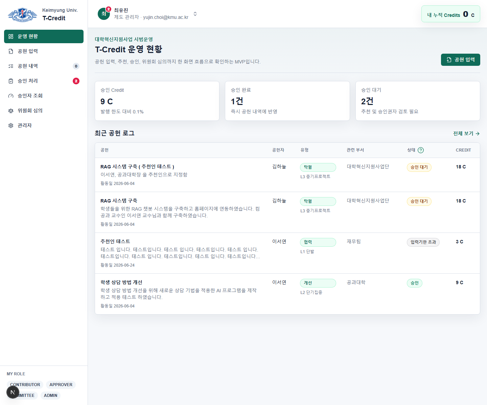
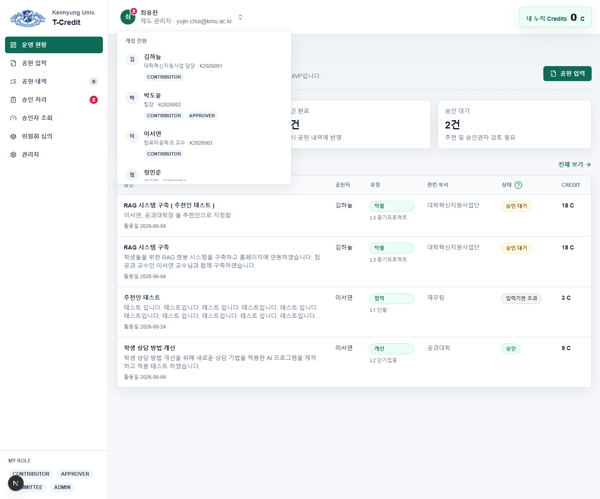
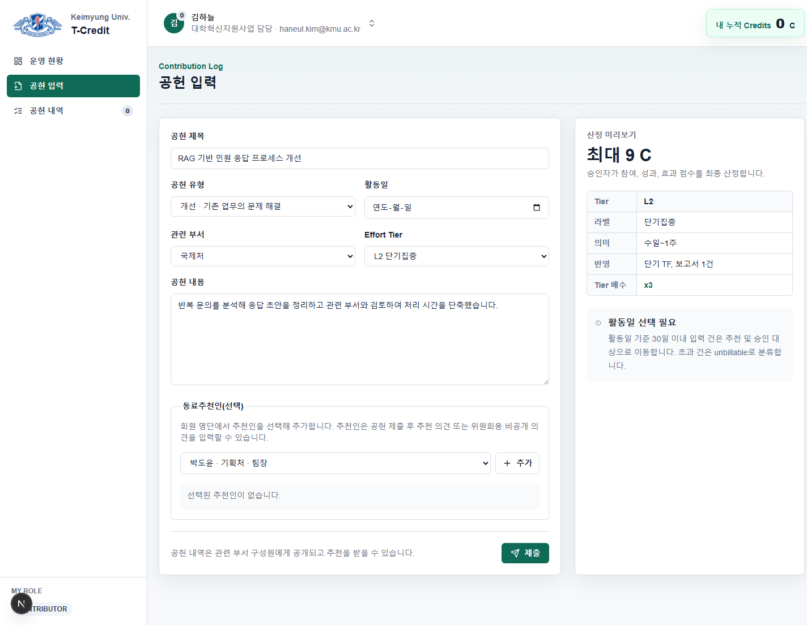
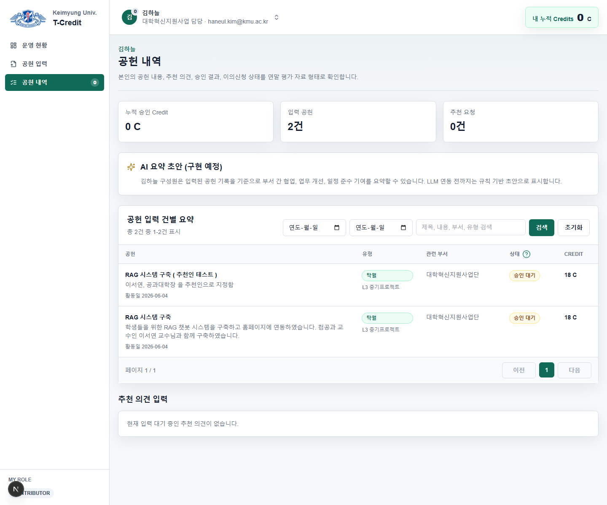
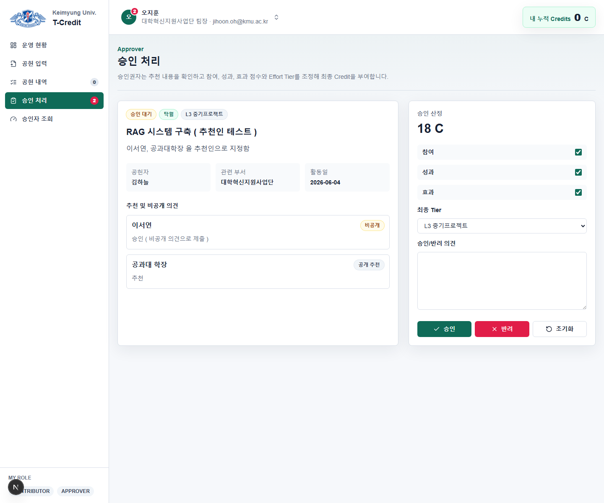
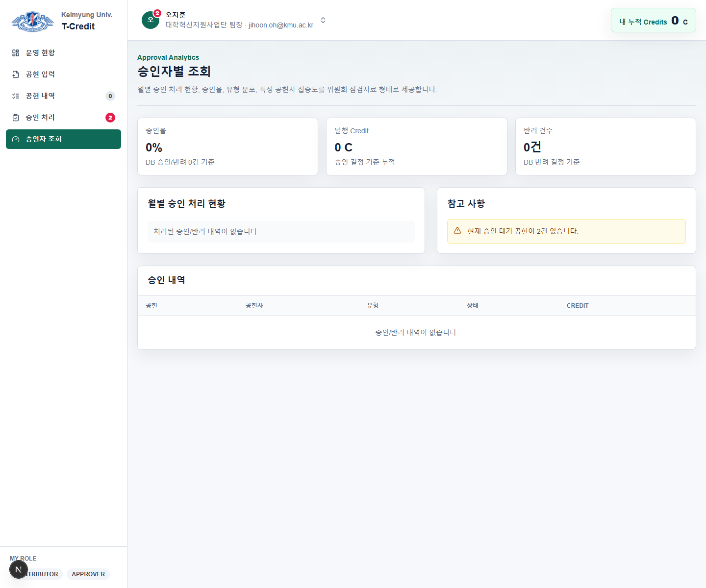
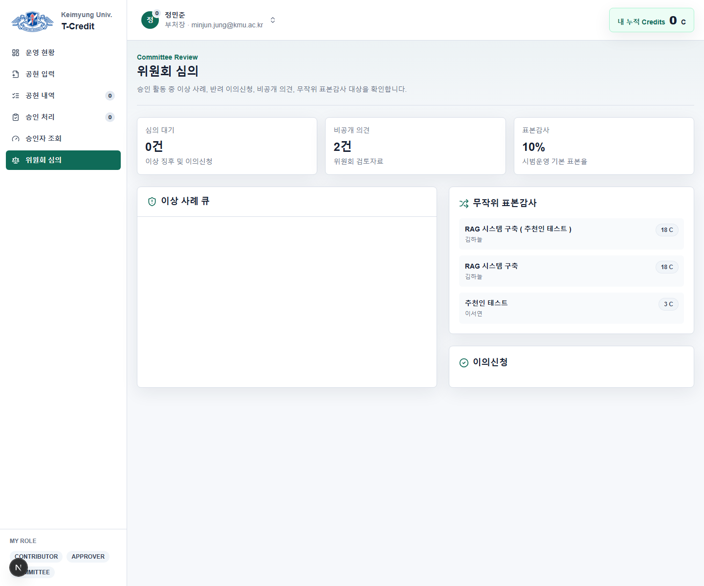
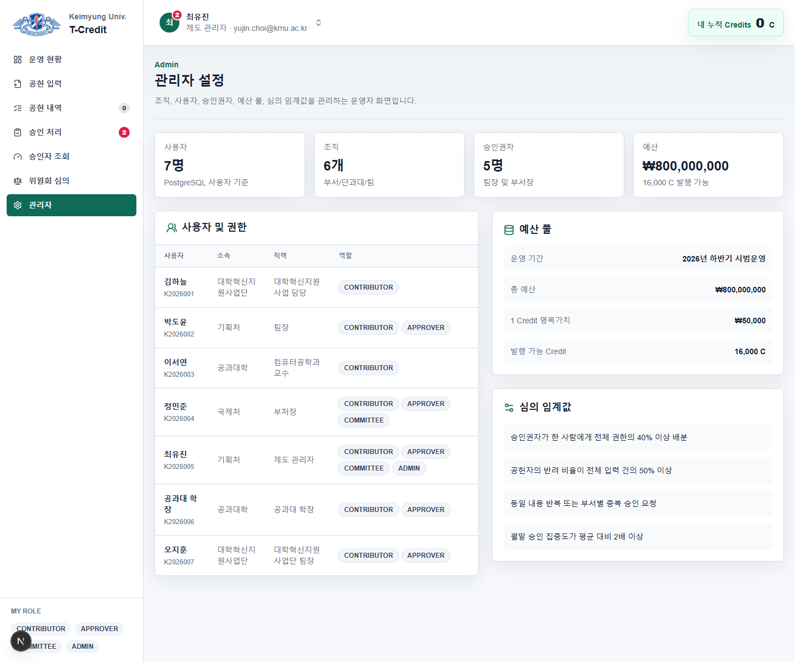

사이트 이용 매뉴얼
공헌 등록, 추천 의견, 승인 처리, 위원회 심의, 관리자 확인 화면을 실제 로컬 사이트 화면 캡처와 함께 정리한 운영 매뉴얼입니다.

| 역할 | 주요 메뉴 | 주요 작업 | 예시 계정 |
|---|---|---|---|
| CONTRIBUTOR 공헌자 |
운영 현황, 공헌 입력, 공헌 내역 | 공헌 등록, 본인 공헌 상태 확인, 추천자로 지정된 경우 추천 의견 입력 | 김하늘, 이서연 등 |
| APPROVER 승인권자 |
승인 처리, 승인자 조회 | 관련 부서의 승인 대기 공헌 검토, 점수와 Credit 확정, 승인/반려 의견 입력 | 오지훈, 박도윤, 공과대 학장 등 |
| COMMITTEE 위원회 |
위원회 심의 | 비공개 의견, 이상 사례, 표본감사, 이의신청 대상 확인 | 정민준, 최유진 |
| ADMIN 관리자 |
관리자 | 사용자와 권한, 조직, 예산 풀, 심의 임계값 확인 | 최유진 |

공헌자는 실제 기여 내용을 등록하고, 필요한 경우 동료 추천인을 지정합니다. 입력 완료 후 상태는 활동일과 추천인 지정 여부에 따라 달라집니다.

공헌 내역 화면은 본인의 공헌 상태를 확인하는 화면이면서, 추천자로 지정된 사람이 추천 의견을 입력하는 화면이기도 합니다.

승인권자는 자신이 담당하는 관련 부서의 승인 대기 공헌을 검토합니다. 관리자는 전체 범위의 승인 대기 건을 볼 수 있습니다.

승인자 조회는 처리 현황을 요약하고, 승인 대기 건이나 처리 편차를 빠르게 확인하는 화면입니다.

위원회 역할은 일반 승인 화면과 별도로 심의 대기, 비공개 의견, 표본감사, 이의신청 대상을 확인합니다.

관리자는 전체 운영 환경을 확인합니다. 현재 화면은 관리 기능 입력보다는 사용자/권한과 예산 풀, 심의 임계값 확인에 초점이 있습니다.

| 상황 | 확인할 화면 | 조치 기준 |
|---|---|---|
| 공헌 제출 후 승인권자에게 보이지 않음 | 공헌 내역, 승인 처리, 관리자 | 추천인이 지정된 건이면 추천 의견 제출 후 승인 대기로 이동합니다. 관련 부서와 승인권자 소속이 일치하는지도 확인합니다. |
| 추천 의견 입력 영역이 비어 있음 | 공헌 내역 | 현재 사용자에게 요청된 추천 의견이 없거나, 이미 제출되어 대기 목록에서 사라진 상태입니다. |
| Credit이 예상과 다름 | 승인 처리, 공헌 내역 | 최종 Credit은 승인권자가 참여, 성과, 효과 점수와 최종 Tier를 조정한 결과입니다. |
| 입력기한 초과 상태 표시 | 공헌 내역, 운영 현황 | 활동일 기준 30일을 초과한 입력 건은 일반 승인 대상이 아니라 unbillable로 분류됩니다. |
| 위원회 검토가 필요한 경우 | 위원회 심의 | 비공개 의견, 이상 사례, 이의신청, 표본감사 대상을 확인하고 운영 정책에 따라 후속 처리합니다. |